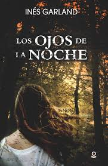

Descripción
- Título: Los ojos de la noche
- Autor: Inés Garland
- Fecha: 1 de Abril de 2016
- Páginas: 160
Sinopsis:
Para olvidarse de Pablo, Dalila se va de viaje con su hermana y unas amigas a un campamento al sur de la Argentina. Allí se conecta con el paisaje idílico, el silencio y la naturaleza. Pero un día se pierde en el bosque y conoce a Tharo, por quien se siente atraída desde el primer instante. La presencia siniestra del señor Zasiok y su oscuro vínculo con el pasado de Tharo convierten esas vacaciones en una intensa aventura, donde el peligro de la noche está al constante acecho.